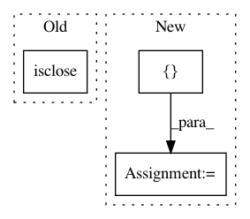

01673d1a6dcb41a20e19f951ee450c44c07aeafd,geomstats/riemannian_metric.py,RiemannianMetric,mean,#RiemannianMetric#Any#Any#Any#Any#Any#,242
Before Change
variance = self.variance(points=points,
weights=weights,
base_point=mean_next)
if gs.isclose(variance, 0.)[0, 0]:
break
if (sq_dist <= epsilon * variance)[0, 0]:
break
After Change
gs.less_equal(sq_dist, epsilon * variance))
return result[0, 0]
last_iteration, mean, variance, sq_dist = gs.while_loop(
lambda i, m, v, sq: while_loop_cond(i, m, v, sq),
lambda i, m, v, sq: while_loop_body(i, m, v, sq),
loop_vars=[iteration, mean, variance, sq_dist],
maximum_iterations=n_max_iterations)
//while iteration < n_max_iterations:
// if gs.isclose(variance, 0.)[0, 0]:
// break
In pattern: SUPERPATTERN
Frequency: 3
Non-data size: 3
Instances
Project Name: geomstats/geomstats
Commit Name: 01673d1a6dcb41a20e19f951ee450c44c07aeafd
Time: 2019-06-16
Author: ninamio78@gmail.com
File Name: geomstats/riemannian_metric.py
Class Name: RiemannianMetric
Method Name: mean
Project Name: geomstats/geomstats
Commit Name: dccb5015ca3443c490aa4f1100892b0bfb5f957b
Time: 2018-12-31
Author: ninamio78@gmail.com
File Name: geomstats/riemannian_metric.py
Class Name: RiemannianMetric
Method Name: mean
Project Name: nipy/dipy
Commit Name: 304cd5f1d8e13d8369afa7bbd55b4b9987c6cc70
Time: 2012-11-30
Author: arokem@gmail.com
File Name: dipy/reconst/dti.py
Class Name: TensorFit
Method Name: fa